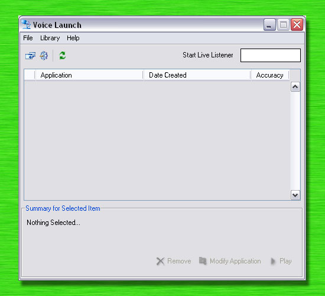
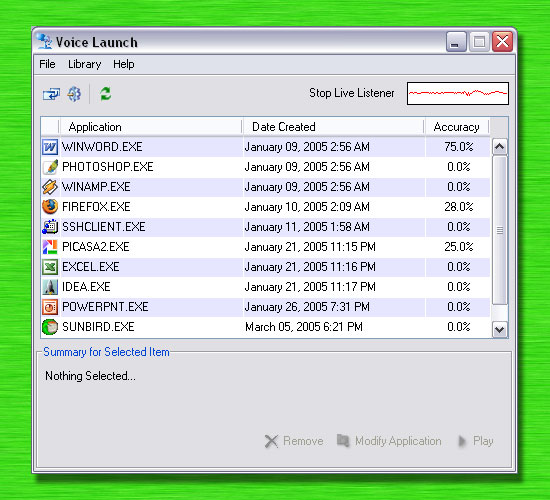

Library View
When Voice Launch is initially launched, a similar window to Figure 5 is shown. This window will allow adding, modifying or deleting library contents.
|  |
Figure 5 - Initial launch |
Figure 6 shows a library with no items. In this window, all of user’s applications are listed and sorted by date. This window also displays accuracy for each item. To modify an item, first click on the item to enable the summary section near the bottom of the window. The user can click remove to delete the selected item, click play to play the sample which was recorded for that item or click modify to change the application which is mapped to. The next section will show how to add new items to the library.
| Hint: You may run application by doubling clicking on them from the library window. |
|  |
Figure 6 - Typical Library |
|